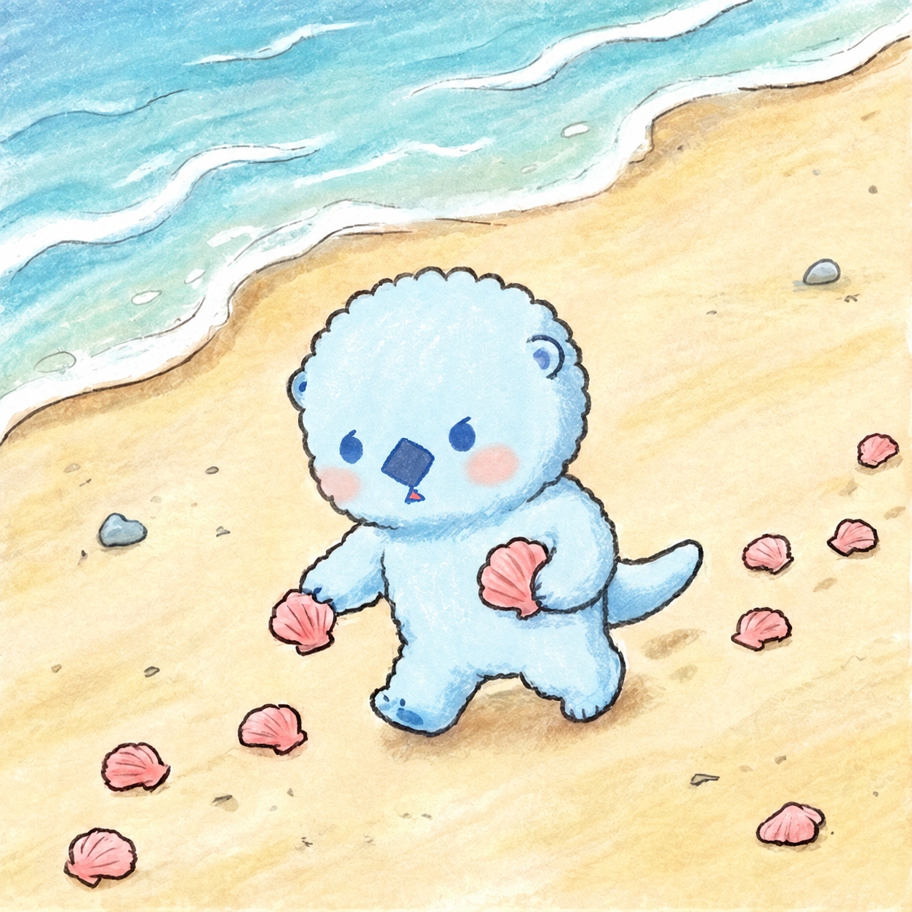
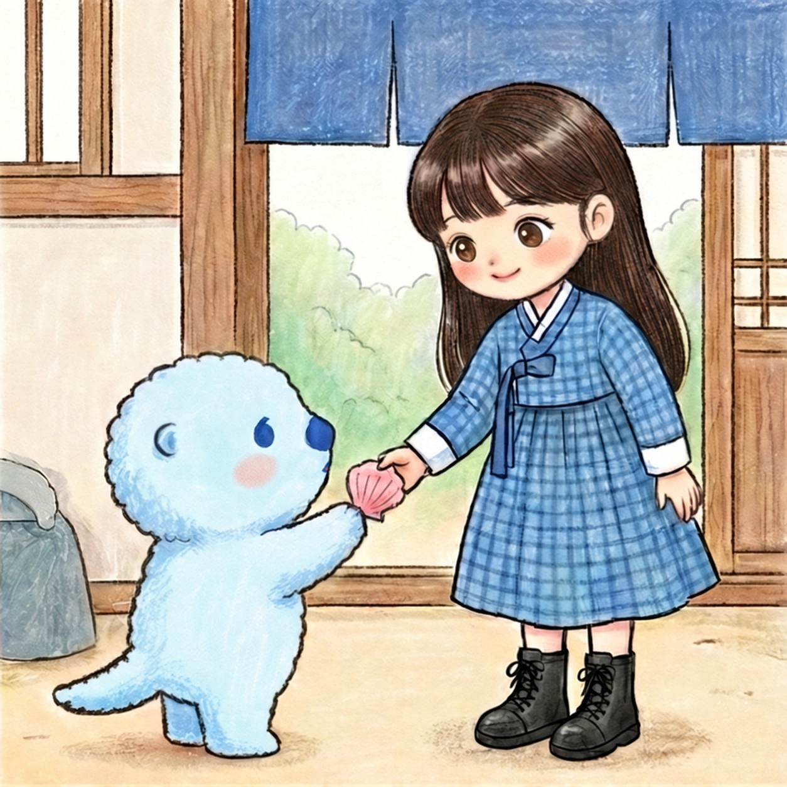
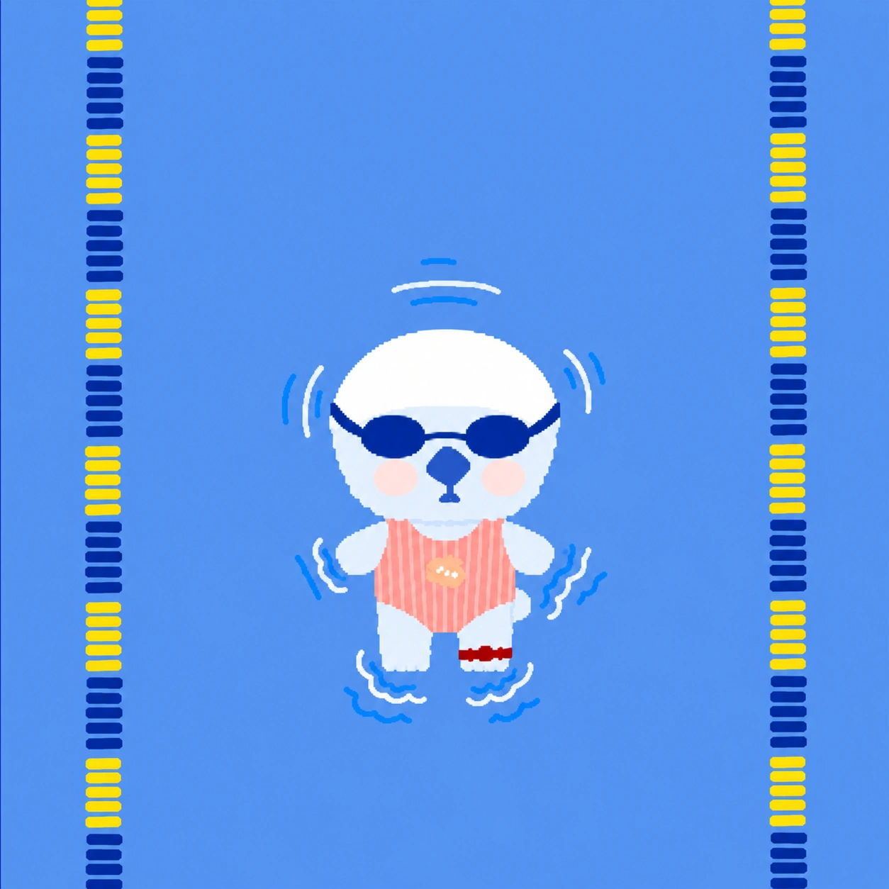
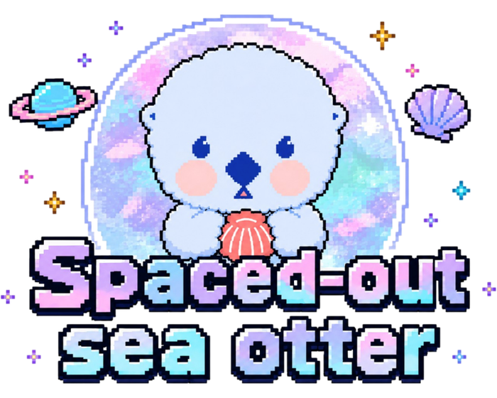
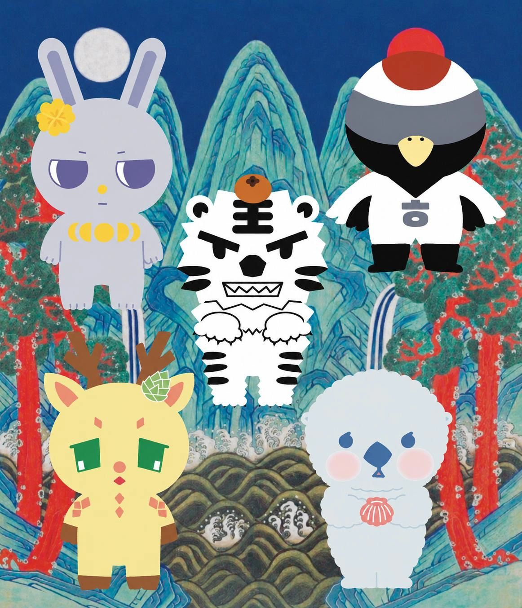
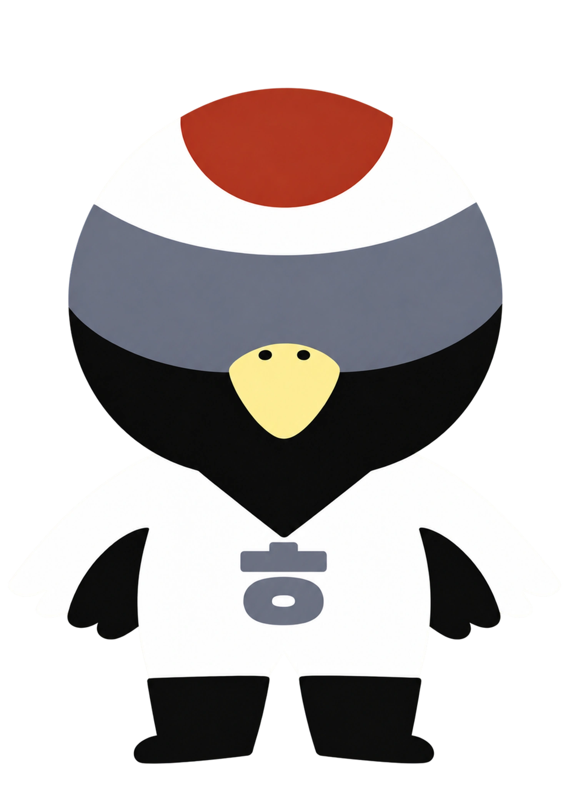
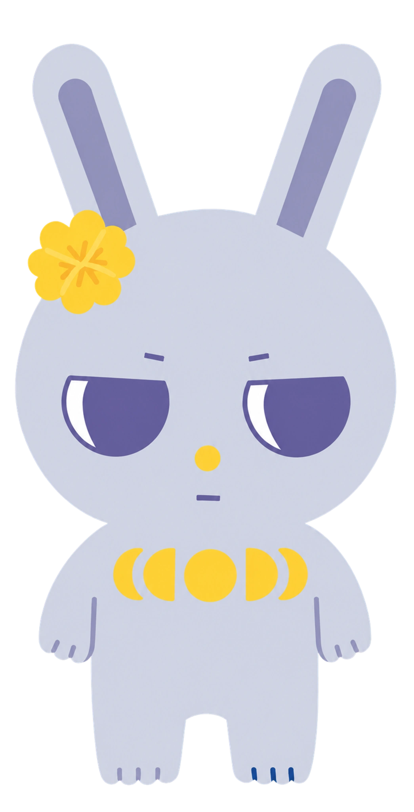
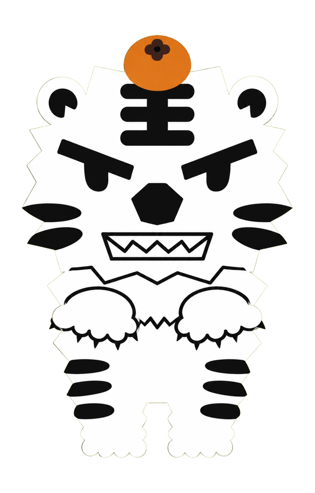
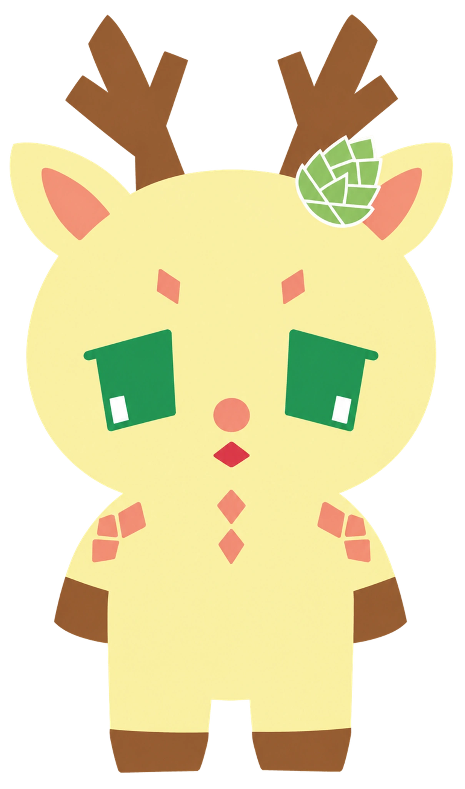

01
수영 대신, 두 발로.
얼빵해달은 해변을 걸어 다니며 조개를 주워요.
AN ORIGINAL CHARACTER BY SHIN HAEDAL
얼빵해달

멍때리다 수영을 배우지 못한 해달.
해변에서 만나요.

얼빵해달은 해변을 걸어 다니며 조개를 주워요.

이렇게 주워온 조개를 작가님에게 가져다줘요. 그래서 조개배달부예요.
조개와 함께, 사랑·용기·위로를 배달해요.
작가님께 조개를 더 빨리 배달하고 싶어서,
얼빵해달은 현대사회스포츠센터에 등록했어요.
지금은 실내수영을 배우는 중이에요.

'Spaced-out Sea Otter'는 단순히 이름만 옮긴 것만이 아니에요. 캐릭터 자체를 번역한 이름이에요.

'얼빵'을 소리 그대로 Eolbbang이라 쓰는 대신, 조금 얼빠져 있고 어딘가 엇박자지만 그래서 사랑스러운 느낌을 'Spaced-out'으로 옮겼어요. 이름 자체가 성격 소개가 되도록요.

'해달'은 동물 해달이면서, 해(☀︎)와 달(☾︎)로도 읽혀요. 하나의 이름 안에 동물과 하늘, 두 겹의 의미가 함께 들어 있어요.
2026 · 10 × 9 × 6 cm
천연자개 · 옻칠 · 굴패각 친환경 수지
얼빵해달에게는
일월오봉단 친구들이 있어요.
일월오봉단은 조선 왕실과 깊이 연결된 전통 회화인 일월오봉도에서 영감을 받은 신해달 작가의 오리지널 캐릭터 그룹이에요. 해와 달, 다섯 봉우리, 소나무와 물이 그 세계의 출발점이에요.
캐릭터와 이야기는 학·토끼·호랑이·사슴 등 한국의 전통적인 소재에서 출발했어요. 각자의 역할에는 신해달 작가가 존중하고 동경하는 직업과 삶의 방식을 담았어요.


경호원
시그니처: ㅎ
변장한 공주
시그니처: 달맞이꽃
산지기
시그니처: 곶감
짐꾼
시그니처: 솔방울
조개배달부
시그니처: 자개캐릭터 라이선싱 · 브랜드 협업 · 아트토이 · 전시 프로젝트
협업 문의↗